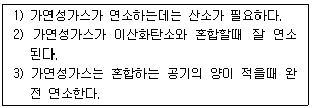
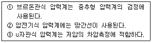

가스산업기사 (2002-03-10 기출문제)
1과목: 연소공학
1. 표면연소란 다음 중 어느 것을 말하는가?
- 오일표면에서 연소하는 상태
- 고체연료가 화염을 길게 내면서 연소하는 상태
- 화염의 외부표면에 산소가 접촉하여 연소하는 현상
- 적열된 코오크스 또는 숯의 표면에 산소가 접촉하여 연소하는 상태
(정답률: 88%)

2. 등유(燈油)의 Pot burner는 다음중 어떤 연소의 형태를 이용한 것인가?
- 등심연소
- 액면연소
- 증발연소
- 에혼합연소
(정답률: 45%)
3. 폭발성 분위기의 생성 조건과 관련되는 위험특성에 속하는 것은?
- 폭발한계
- 화염일주한계
- 최소점화전류
- 폭굉유도거리
(정답률: 71%)
4. 다음 중 위험한 증기가 있는 곳의 장치에 정전기를 해소 시키기 위한 방법이 아닌 것은?
- 접속 및 접지
- 이온화
- 증습
- 가압
(정답률: 82%)
5. 가스의 속도를 크게 할수록 압력손실은 커지나 분리 효율이 좋아지는 집진장치는?
- 세정 집진장치
- 사이클론 집진장치
- 멀티크론 집진장치
- 벤츄리스크레버 집진장치
(정답률: 79%)
6. 다음 중 가스의 성질을 바르게 나타낸 것은?
- 산소는 가연성이다.
- 일산화탄소는 불연성이다.
- 수소는 불연성이다.
- 산화에틸렌은 가연성이다.
(정답률: 86%)
7. 1기압 20L의 공기를 4L 용기에 넣었을 때 산소의 분압은? (단, 압축시 온도변화는 없고, 공기는 이상기체로 가정하며,공기중 산소의 백분율은 20%로 가정한다.)
- 약 1기압
- 약 2기압
- 약 3기압
- 약 4기압
(정답률: 65%)
8. 폭굉유도거리(DID)가 짧아지는 요인으로 옳지 않은 것은?
- 관속에 방해물이 있는 경우
- 압력이 낮은 경우
- 점화에너지가 큰 경우
- 정상연소속도가 큰 혼합가스인 경우
(정답률: 81%)
9. 메탄의 폭발 범위는 5.0-15.0% V/V 라고 한다. 메탄의 위험도는?
- 8.3
- 6.2
- 4.1
- 2.0
(정답률: 80%)
10. 플라스틱, 합성수지와 같은 고체 가연성물질의 연소형태는?
- 표면연소
- 자기연소
- 확산연소
- 분해연소
(정답률: 77%)
11. 내압(耐壓)방폭구조로 방폭 전기기기를 설계할 때 가장 중요하게 고려해야 할 사항은?
- 가연성 가스의 최소점화에너지
- 가연성 가스의 안전간극
- 가연성 가스의 연소열
- 가연성 가스의 발화점
(정답률: 77%)
12. 다음의 가스가 같은 조건에서 같은 질량이 연소할때 가장 높은 발열량(㎉/㎏)을 나타내는 것은?
- 수소
- 메탄
- 프로판
- 아세틸렌
(정답률: 62%)
13. 공기 20kg과 증기 5kg이 15m3의 용기속에 들어있다. 만약 이 혼합가스의 온도가 50℃라면 혼합가스의 압력은 몇 kg/cm2 이겠는가? (단, 공기와 증기의 가스 정수는 각 29.5, 47.0 kg· m/kg· K 이다.)
- 1.776 kg/cm2
- 1.270 kg/cm2
- 0.987 kg/cm2
- 0.386 kg/cm2
(정답률: 40%)
14. 다음 사항중 가연성가스의 연소,폭발에 관한 설명중 옳은 것은?

- 1),2)
- 2),3)
- 1)
- 3)
(정답률: 83%)
15. 액체가 급격한 상변화를 하여 증기가 된 후 폭발하는 현상을 무엇이라 하는가?
- 블레브(BLEVE)
- 파이어 볼(FIRE BALL)
- 디토네이션(DETONATION)
- 풀 파이어(POOL FIRE)
(정답률: 75%)
16. 다음은 가스 폭발범위에 관한 설명중 옳은 것은?
- 가스의 온도가 높아지면 폭발범위는 좁아진다.
- 폭발상한과 폭발하한의 차이가 작을수록 위험도는 커진다.
- 압력이 1atm보다 낮아질때 폭발범위는 큰 변화가 생긴다.
- 고온,고압 상태의 경우에 가스압이 높아지면 폭발 범위는 넓어진다.
(정답률: 76%)
17. 기체의 임계온도에 관한 다음 사항 중 맞는 것은?
- 수소는 임계온도가 높으나 상온에서는 액화가 불가능하다.
- 질소는 임계온도가 낮지만 상온에서 액화가 가능하다
- 메탄은 임계온도가 낮으며 상온에서는 액화가 불가능하다.
- 이산화황은 극저온에 가압하여야만 액화가 가능하다.
(정답률: 57%)
18. 다음은 자연발화온도(Autoignition temperature:AIT)에 영향을 주는 요인 중에서 증기의 농도에 관한 사항이다. 옳은 것은?
- 가연성 혼합기체의 AIT는 가연성 가스와 공기의 혼합 비가 1:1 일때 가장 낮다.
- 가연성 증기에 비하여 산소의 농도가 클수록 AIT는 낮아진다.
- AIT는 가연성 증기의 농도가 양론 농도보다 약간 높을때가 가장 낮다.
- 가연성 가스와 산소의 혼합비가 1:1일 때 AIT는 가장 낮다.
(정답률: 68%)
19. 다음 설명 중 옳은 것은?
- 부탄이 완전연소하면 일산화탄소 가스가 생성된다.
- 부탄이 완전연소하면 탄산가스와 물이 생성된다.
- 프로판이 불완전연소하면 탄산가스와 불소가 생성된다.
- 프로판이 불완전연소하면 탄산가스와 규소가 생성된다.
(정답률: 75%)
20. 프로판가스의 연소과정에서 발생한 열량이 15500kcal/kg 이고 연소할때 발생된 수증기의 잠열이 4500kcal/kg이다. 이때 프로판 가스의 연소효율은 얼마인가? (단,프로판가스의 진발열량은 12100kcal/kg임)
- 0.54
- 0.63
- 0.72
- 0.91
(정답률: 59%)
2과목: 가스설비
21. 산소 압축기의 윤활제에 물을 사용하는 이유는?
- 산소는 기름을 분해하므로
- 기름을 사용하면 실린더 내부가 더러워지므로
- 압축산소에 유기물이 있으면 산화력이 커서 폭발하므로
- 산소와 기름은 중합하므로
(정답률: 81%)
22. 흡입압력이 3[kg/cm2 a] 인 3 단 압축기가 있다. 각단의 압축비를 3 이라 할때 제3단의 토출압력은 몇 [kg/cm2 a] 되는가?
- 27[kg/cm2 a]
- 49[kg/cm2 a]
- 81[kg/cm2 a]
- 63[kg/cm2 a]
(정답률: 65%)
23. 물질을 취급하는 장치의 사용재료로서 구리 및 구리합금을 사용해도 좋은 것은?
- 황화수소
- 수소
- 아세틸렌
- 암모니아
(정답률: 45%)
24. 원심 펌프의 특징이 아닌 것은?
- 캐비테이션이나 서어징현상이 발생하기 어렵다.
- 원심력에 의하여 액체를 이용한다.
- 고양정에 적합하다.
- 가이드 베인이 있는 것을 터어빈펌프라 한다.
(정답률: 68%)
25. 상온의 질소가스는 압력을 상승시키면 가스점도가 어떻게 변화하는가?
- 높게 된다.
- 낮게 된다.
- 감소 한다.
- 변하지 않는다.
(정답률: 59%)
26. 도시가스 누출의 원인이 될수 없는 것은?
- 재료의 노화
- 급격한 부하변동
- 지반 변동
- 부식
(정답률: 58%)
27. 내경:100[mm],길이:400[m] 인 주철관을 유속 2[m/s] 로 물이 흐를때의 마찰손실수두를 구하면? (단, λ 는 0.04 이다.)
- 32.7 [m]
- 34.5 [m]
- 40.2 [m]
- 45.3 [m]
(정답률: 45%)
28. 가스액화 원리로 가장 기본적인 방법은?
- 단열팽창
- 단열압축
- 등온팽창
- 등온압축
(정답률: 44%)
29. 배관 등의 용접 및 비파괴검사 중 용접부의 외관검사로서 기준에 맞지 않는 것은?
- 보강 덧붙임은 그 높이가 모재 표면보다 낮지 않도록 하고, 3mm 이상으로 할 것
- 외면의 언더컷은 그 단면이 V자형으로 되지 않도록 하며, 1개의 언더컷 길이 및 30mm 이하 및 0.5mm 이하이어야 한다.
- 용접부 및 그 부근에는 균열, 아아크 스트라이크, 위해하다고 인정되는 지그의 흔적, 오버랩 및 피트 등의 결함이 없을 것
- 비이드형상이 일정하며, 슬러그, 스패터등의 부착되어 있지 않을 것
(정답률: 73%)
30. 다음 중 가스홀더의 기능이 아닌 것은?
- 가스수요의 시간적 변화에 따라 제조가 따르지 못 할때 가스의 공급 및 저장
- 정전,배관공사 등에 의한 제조 및 공급설비의 일시적 중단시 공급
- 조성의 변동이 있는 제조가스를 받아들여 공급가스의 성분, 열량, 연소성등의 균일화
- 공기를 주입하여 발열량이 큰 가스로 혼합공급
(정답률: 70%)
31. 암모니아 합성탑에 대한 설명으로 틀린 것은?
- 재질은 탄소강을 사용한다.
- 재질은 18-8 스테인레스강을 사용한다.
- 촉매로는 보통 산화철에 CaO를 첨가한 것이 사용된다
- 촉매로는 보통 산화철에 K2O 및 Al2O3 를 첨가한 것이 사용된다.
(정답률: 60%)
32. LPG 집합 공급 시설에 관해서 옳지 않은 것은?
- LPG 20Kg,50Kg 용기로서 저장실에 설치한다.
- 소형탱크와 배관으로 공급할 수 있다.
- 자동절체식조정기,가스미터를 설치하여 공급한다.
- 50세대까지는 집합공급하여야 한다.
(정답률: 75%)
33. 내용적 10 m3 의 액화산소 저장설비(지상설치)와 제1종 보호시설과 유지해야 할 안전거리는? (단,액화산소의 상용온도에서의 액화비중:1.14 로 본다)
- 7 m
- 9 m
- 14 m
- 21 m
(정답률: 75%)
34. 전기방식 중 희생양극법의 특징으로 틀린 것은?
- 과방식의 염려가 없다.
- 다른 매설금속에 대한 간섭이 거의 없다.
- 간편하다.
- 양극의 소모가 거의없다.
(정답률: 64%)
35. 언로딩형 정압기에 대한 설명 중 틀린 것은?
- 2차 압력이 저하하면 유체흐름의 양은 증가한다.
- 구동압력이 상승하면 유체흐름의 양은 감소한다.
- 2차압력이 상승하면 구동압력은 저하된다.
- 구동압력이 저하하면 메인밸브는 열린다.
(정답률: 43%)
36. 다음 보기항 중 설명이 틀린 것은?
- 탄소강에서 탄소 함유량이 1.0% 이상일 경우 경도는 증가하나 인장강도는 급격히 감소한다.
- 규소는 탄소강의 유동성과 냉간 가공성을 좋게 한다.
- 탄소강에 크롬을 첨가하면 내마멸성과 내식성이 증가한다.
- 강재중에 인(P)이 많이 함유되면 연신율이 저하된다.
(정답률: 29%)
37. LPG 조정기의 규격용량은 총가스소비량의 몇 % 이상의 규격용량을 가져야 하는가?
- 110%
- 120%
- 130%
- 150%
(정답률: 39%)
38. 용기 재료의 구비조건으로 잘못된 것은?
- 무게가 무거울 것
- 충분한 강도를 가질 것
- 내식성을 가질 것
- 가공중 결함이 생기지 않을 것
(정답률: 81%)
39. 메탄염소화에 의해 염화메틸(CH3Cl)을 제조할때 반응온도는 얼마 정도로 해야 하는가?
- 400℃
- 300℃
- 200℃
- 100℃
(정답률: 64%)
40. 다음 중 500℃ 이상의 고온, 고압가스설비에 사용이 적당한 재료는?
- 탄소강
- 구리
- 크롬강
- 고탄소강
(정답률: 62%)
3과목: 가스안전관리
41. 충전 용기등을 적재하여 운행하는 경우는 변화가를 피하도록 하고 있는데 "번화가"란?
- 차량의 너비에 2.5m 를 더한 너비 이하인 통로주위
- 차량의 길이에 3.5m 를 더한 너비 이하인 통로주위
- 차량의 너비에 3.5m 를 더한 너비 이하인 통로주위
- 차량의 길이에 3m 를 더한 너비 이하인 통로주위
(정답률: 55%)
42. 가연성 독성가스의 용기 도색후 그 표기 방법이 틀린것은?
- 가연성가스는 "연"자를 표시한다.
- 독성가스는 "독"자를 표시한다.
- 내용적 2ℓ 미만의 용기는 그 제조자가 정한 바에 의한다.
- 액화석유가스는 "연"자를 표시하면 부탄가스를 충전 하는 용기는 부탄가스임을 표시한다.
(정답률: 62%)
43. 고압가스 충전용기의 운반 기준으로 틀린 것은?
- 차량등에는 고무판 또는 가마니 등을 항상 갖춰 충전용기를 차에 싣거나 차에서 내릴때 최소한으로 충격을 방지한다.
- 충전용기는 항상 자전거 또는 오토바이에 적재하여 운반할 것
- 가연성가스 또는 산소를 운반하는 차량에는 소화설비 및 재해발생방지를 위한 응급조치 자재 및 공구등을 휴대할 것
- 독성가스를 차량에 적재하여 운반할 때에는 보호구 및 재해 발생장치를 위한 응급조치 자재 및 공구등을 휴대할 것
(정답률: 78%)
44. 다음 염소가스에 대한 설명으로 옳지 않은 것은?
- 염소자체는 폭발성이나 인화성이 없다.
- 조연성이 있어 다른 물질의 연소를 도와준다.
- 부식성이 매우 강하다.
- 상온에서 무색· 무취 가스 이다.
(정답률: 57%)
45. 다음 중 압력 제어장치 설치 위치가 틀린 곳은?
- 압축기 토출측배관
- 압력조정기 2차측배관
- 펌프 토출측배관
- 가스미터기 출구배관
(정답률: 47%)
46. LP 가스 방출관의 방출구 높이는? (단, 공기보다 비중이 무거운 경우)
- 지상에서 5m 높이 이하
- 지상에서 5m 높이 이상
- 정상부에서 1m 이상
- 정상부에서 1m 이하
(정답률: 61%)
47. 도시가스배관을 지하에 설치시 되메움 재료는 3 단계로 구분하여 포설한다. 이때 "침상재료" 라 함은?
- 배관침하를 방지하기 위해 배관하부에 포설하는 재료
- 배관에 작용하는 하중을 분산시켜주고 도로의 침하를 방지하기 위해 포설하는 재료
- 배관기초에서부터 노면까지 포설하는 배관주위 모든 재료
- 배관에 작용하는 하중을 수직방향 및 횡방향에서 지지하고 하중을 기초아래로 분산하기 위한 재료
(정답률: 58%)
48. 연료용 가스에 주입하는 부취제(냄새가 나는 물질)의 측정방법으로 볼 수 없는 것은?
- 오더(Odor) 미터법
- 주사기법
- 무취실법
- 시험가스 주입법
(정답률: 58%)
49. 도시가스 전기방식시설의 유지관리에 관한 설명 중 잘못된 것은?
- 관대지전위(管對地電位)는 1년에 1회이상 점검한다.
- 외부전원법의 정류기출력은 3개월에 1회이상 점검한다.
- 배류법의 배류기의 출력은 3개월에 1회이상 점검한다
- 절연부속품, 역전류장치 등의 효과는 1년에 1회이상 점검한다.
(정답률: 38%)
50. 충전된 수소용기가 운반도중 파열사고가 일어났다. 사고원인 가능성을 예시한것으로 관계가 가장 적은 것은?
- 과충전에 의하여 파열되었다.
- 용기가 수소취성을 일으켰다.
- 용기에 균열이 있었는데 확인하지 않고 충전하였다.
- 용기취급 부주의로 충격에 의하여 일어났다.
(정답률: 55%)
51. 도시가스사업법상 배관 구분시 사용되지 않는 용어는?
- 본관
- 사용자 공급관
- 가정관
- 공급관
(정답률: 74%)
52. 차량에 고정된 탱크에 고압가스를 충전하거나 이입 받을 때 차량정지목 등으로 차량을 고정 하여야 하는 용량은?
- 500 L
- 1,000 L
- 2,000 L
- 3,000 L
(정답률: 63%)
53. 용기 보관실을 설치한후 액화 석유가스를 사용하여야 하는 시설은?
- 저장능력 500㎏ 이상
- 저장능력 300㎏ 이상
- 저장능력 2500㎏ 이상
- 저장능력 100㎏ 이상
(정답률: 62%)
54. 압력조정기를 제조하고자 하는 자가 갖추어야할 검사설비에 해당되지 않는 것은?
- 치수측정설비
- 주조 및 다이케스팅설비
- 내압시험설비
- 기밀시험설비
(정답률: 53%)
55. 용기의 종류별 부속품 기호가 틀린 것은?
- 아세틸렌 : AG
- 압축가스 : PG
- 액화가스 : LPW
- 초저온 및 저온 : LT
(정답률: 80%)
56. 압축기 정지시 지켜야 할 사항 중 틀린 것은?
- 냉각수 밸브를 잠근다.
- 드레인 밸브를 잠근다.
- 전동기 스위치를 열어둔다.
- 압력계는 규정압력을 나타내는지 확인한다.
(정답률: 40%)
57. 이음새 없는 용기를 제조할 때 재료시험에 속하지 않는 것은?
- 인장시험
- 충격시험
- 압궤시험
- 내압시험
(정답률: 47%)
58. 고압가스충전의 시설기준에서 산소충전시설과 고압가스 설비시설의 안전거리는 몇 m 이상 유지해야 하는가?
- 3 m
- 6 m
- 8 m
- 10 m
(정답률: 40%)
59. 고압가스를 압축하는 경우 가스를 압축하여서는 아니되는 경우는?
- 가연성가스중 산소의 용량이 전용량의 10% 이상의 것
- 산소중의 가연성가스 용량이 전용량의 10% 이상의 것
- 아세틸렌, 에틸렌 또는 수소중의 산소용량이 전용량의 2% 이상의 것
- 산소중의 아세틸렌, 에틸렌 또는 수소의 용량합계가 전용량의 10% 이상의 것
(정답률: 66%)
60. 아세틸렌을 용기에 충전시 다공물질 다공도의 범위로 바른 것은?
- 75%이상 91%미만
- 75%이상 95%미만
- 75%이상 92%미만
- 72%이상 95%미만
(정답률: 79%)
4과목: 가스계측
61. 다음 중 오르자트(Orsat) 가스분석기에서 가스에 따른 흡수제가 잘못 연결된 것은?
- CO2 - KOH 30% 수용액
- O2 - 알칼리성 피로카롤용액
- CO - 염화제1구리 용액
- N2 - 황린
(정답률: 68%)
62. 기차가 5.0% 인 루츠가스 미터로 측정한 유량이 30.4m3/h 였다면 기준기로 측정한 유량은 몇 m3/h 인가?
- 31.0
- 31.6
- 32.0
- 32.4
(정답률: 50%)
63. 다음 시료가스 중에서 적외선 분광법으로 측정 가능한 기체는?
- O2
- SO2
- N2
- Cl2
(정답률: 64%)
64. 기체 크로마토그라피법의 원리로서 가장 적합한 것은?
- 흡착제를 충전한 관속에 혼합시료를 넣고, 용제를 유동시켜 흡수력 차이에 따라 성분의 분리가 일어난다
- 관속을 지나가는 혼합기체 시료가 운반기체에 따라 분리가 일어난다.
- 혼합기체의 성분이 운반기체에 녹는 용해도 차이에 따라 성분의 분리가 일어난다.
- 혼합기체의 성분은 관내에 자기장의 세기에 따라 분리가 잘 일어난다.
(정답률: 56%)
65. 1차 제어장치가 제어량을 측정하여 제어명령을 하고 2차 제어장치가 이 명령을 바탕으로 제어량을 조절하는 측정제어와 가장 가까운 것은?
- program제어
- 비례제어
- 카스캐이드제어
- 정치제어
(정답률: 79%)
66. 다음 가스미터 중 추량식 가스미터는?
- 습식형
- 루츠형
- 막식형
- 터빈형
(정답률: 65%)
67. 다음 압력변화에 의한 탄성변위를 이용한 압력계는?
- 액주식 압력계
- 점성 압력계
- 부르돈관식 압력계
- 링밸런스 압력계
(정답률: 68%)
68. 점화를 행하려고 한다. 자동제어방법에 적용되는 것은?
- 시퀀스제어
- 인터록
- 피이드백제어
- 카스캐이드제어
(정답률: 53%)
69. 다음의 사항 중 압력계에 관한 설명이 옳은 것은?

- ①
- ②
- ③
- ①,②,③
(정답률: 53%)
70. 어떤 분리관에서 얻은 벤젠의 기체 크로마토그램을 분석 하였더니 시료 도입점으로부터 피크최고점까지의 길이가 85.4 mm, 봉우리의 폭이 9.6 mm 이었다. 이론단수는?
- 1266 단
- 1046 단
- 935 단
- 835 단
(정답률: 49%)
71. 10 호 가스미터기로 1일 4 시간씩 20 일간 작동 했다면 최대 사용 가스량은 얼마인가? (단, 압력차 수주 30 mmH2O 이다.)
- 200 m3
- 350 m3
- 400 m3
- 800 m3
(정답률: 55%)
72. 다음 제어동작 중 연속동작에 해당되지 않는 것은?
- O 동작
- D 동작
- P 동작
- I 동작
(정답률: 68%)
73. 가스미터의 선정시 주의해야 할 사항이 아닌 것은?
- 내열성, 내압성이 좋고 유지관리가 용이 할 것
- 가스미터용량이 최대가스사용량과 일치 할 것
- 계량법에서 정한 유효기간에 만족 할 것
- 외관시험 등을 행한 것 일 것
(정답률: 67%)
74. 도시가스의 누출여부를 검사할 때 사용되는 검지기가 아닌 것은 ?
- 검지관식 검지기
- 적외선식 검지기
- 가연성 가스검지기
- 열팽창식 검지기
(정답률: 58%)
75. 가스미터 부착기준 중 유의할 사항이 아닌 것은?
- 수평부착
- 배관의 상호부담배제
- 입구배관에 드레인부착
- 입,출구 구분할 필요없음
(정답률: 71%)
76. 기체연료의 발열량을 측정하는 열량계는 어느 것인가?
- Richter 열량계
- Scheel 열량계
- Junker 열량계
- Thomson 열량계
(정답률: 73%)
77. 압력계와 진공계 두가지 기능을 갖춘 압력 게이지를 무엇이라고 하는가?
- 부르돈관(Bourdon tube)압력계
- 컴파운드게이지(Compound gage)
- 초음파압력계
- 전자압력계
(정답률: 53%)
78. 다음 중 용적식 유량계 형태가 아닌 것은?
- 오우벌형 유량계
- 왕복피스톤형 유량계
- 피토우관 유량계
- 로터리형 유량계
(정답률: 49%)
79. 가스미터의 필요 조건이 아닌 것은?
- 구조가 간단할 것
- 감도가 예민할 것
- 대형으로 용량이 클 것
- 기차의 조정이 용이할것
(정답률: 74%)
80. 유량의 계측 단위로 옳지 않은 것은?
- ㎏/h
- ㎏/s
- Nm3/s
- ㎏/m3
(정답률: 62%)